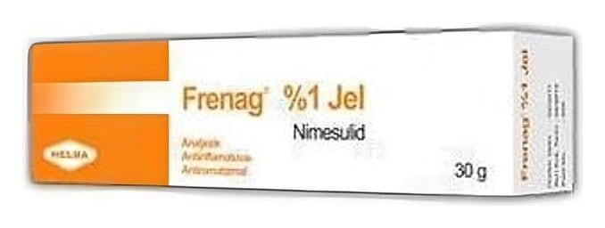

Frenag %1 Jel, 30 g

Ne için kullanılır
KT · Bölüm 1FRENAG, açık sarı renkli, homojen jel halindedir. Her tüp, steroid olmayan antienflamatuvar ilaçlar (NSAİİ) grubundan olan %1 nimesulid içerir ve 30 gramlık tüp ve karton kutu ambalajlarda kullanıma sunulmuştur.
FRENAG, yumuşak doku romatizmal hastalıkları, ezilme ve burkulma gibi yumuşak doku rahatsızlıkları, ağrı, iltihap ve kas gerginliği ile kendini gösteren kas ve iskelet sistemi hastalıklarının bölgesel tedavisinde ağrı kesici ve iltihap giderici olarak etkilidir.